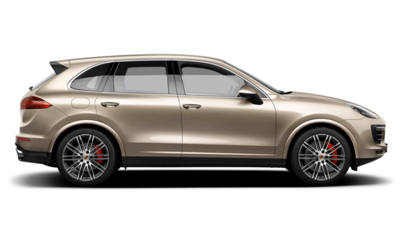

BMWX5

BMWX5 |
|
| The BMW X5 is a mid-size luxury crossover pr3duced by BMW. The first generation of the X5, with the chassis code E53, made its debut in 1999. It was BMW's first SUV and it also featured all-wheel drive and was available with either manual or automatic transmission. In 2006, the second generation X5 was launched, known internally as the E70, featuring the torque-split capable xDrive all-wheel drive system mated to an automatic transmission, and in 2009 the X5 M performance variant was released as a 2010 model. |
Porsche Cayenne |
|
 | The Porsche Cayenne (Type 9PA, Designated 955) is a mid-size luxury crossover sport utility vehicle produced by the German manufacturer Porsche since 2002, with North American sales beginning in 2003. It is the first V8-engined vehicle built by Porsche since 1995, when the Porsche 928 was discontinued. It is also Porsche's first off road Varient sports car since its Super and Junior tractors of 1950s, and the first Porsche with four doors. Since 2008, all engines have featured direct injection technology. |